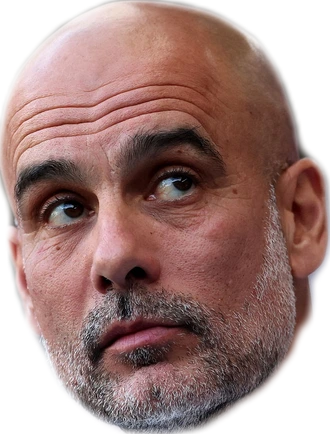
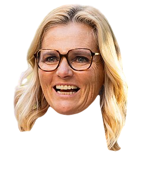
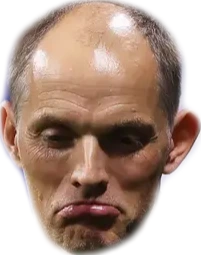
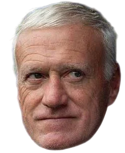
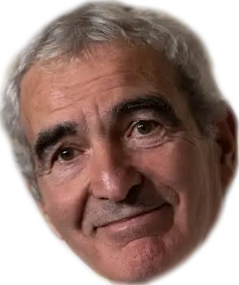
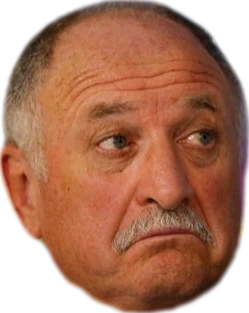
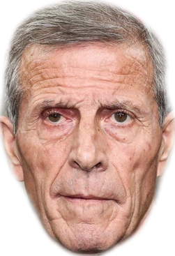
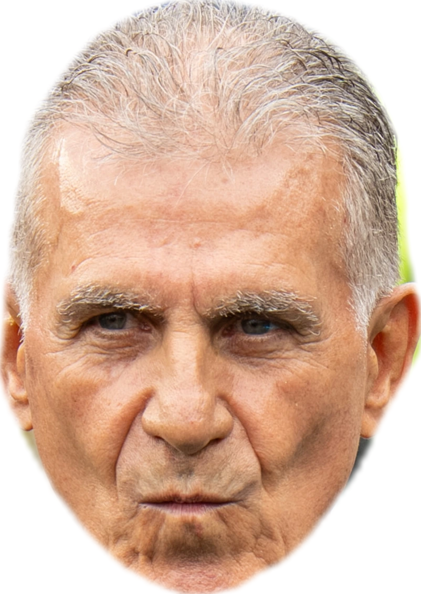

With England's exit from the 2026 world cup, the last foreign manager in the tournament, Thomas Tuchel 🇩🇪, was eliminated. Tuchel was quickly blamed for his poor bus driving. Some British outlets then published: foreign managers have never won the World Cup. The argument is thinly veiled: why are we wasting our time on Tuchel at all? This argument is an empirical one, and it set off my statistics spidey senses. Foreign managers never won the whole tournament, but maybe they just got unlucky? Maybe there are just very few foreign managers? Either way, while Luis de la Fuente 🇪🇸's Spain lifted the trophy over the weekend, I crunched the numbers on foreign managers between 1978 and 2022 to see if the claim holds up. This article comes with a warning: I know very little about football. So take this thing with a grain of salt.

Before asking whether foreign managers win, I wanted to count how many of them even participate. So I pulled every manager who took a team to the World Cup between 1978 and 2022 off Wikipedia and tallied nationalities. Turns out "foreign managers" are not exactly statistical oddities — 2006 peaked at 43% foreign-led squads, and just when you'd expect the trend to be dying down, 2026 quietly broke the record anyway: 24 of 48 managers weren't managing teams from their own country. So why haven't they won yet?
To answer why foreign managers haven't won, I wanted to check how deep they get into the tournament. By breaking down manager performance per tournament stage, we can start to get an idea of whether foreign managers are just unlucky, or if their teams consistently "underperform". The figure shows how many foreign managers are left in the tournament at each stage, compared to domestic managers. The effects are pretty striking: foreign managers seem to qualify at the same rate (31.9% to 30.7%), but they start to drop out quickly as soon as the knockout rounds begin. In this dataset, only 4 foreign managers made it to the quarter finals. If foreign-managed teams did as well as domestic-managed teams, we would have expected to see about 8 foreign-managed finalists, and about 3 foreign-managed winners between 1978 and 2022. Foreign managers are just not going as far as domestic managers. Is it time to get rid of Tuchel and co.? Let's have a look at what teams foreign managers are managing, and how good those teams are.
To decide if foreign managers are truly underperforming, we need to define "performance". To me, "performance" means how well a managed team does, relative to a how well that same team would do without said manager. Here is where the statistics get interesting: estimating a team's performance without a manager is not an obvious procedure, but not impossible either. To do this, I collected ELO ratings for each of the teams, from eloratings.net . ELO ratings are used to create the FIFA rankings (nowadays), and allow us to estimate how often one team would win over another. For example: In the 2022 Qatar world cup, the Netherlands (ELO rating: 2040) faced Argentina (ELO rating: 2143) in the quarterfinal. Using these ratings, we can simulate the outcome of the match. For this specific match, the ELO ratings predict that Argentina wins about 64% of the time. In reality, the match went to penalties, and common knowledge (not statistics) dictates that the Netherlands loses those 100% of the time.
By running 20,000 simulations per year, we can get an idea how far foreign managers are expected to get, based on the ELO ratings of their respective teams. Still, to some degree, ELO ratings can be high because of good management. That's why this model uses the last known rating from before a manager's tenure: it simulates teams without a manager.
The results are pretty similar to the real outcomes: foreign managed teams (with a simulated manager removal), drop out of the tournament way faster. That suggests that foreign managers on average manage worse teams. Without their managers, foreign-managed teams were expected to win the world cup about once between 1998 and 2022. The most likely candidate was Portugal in 2006, who were eliminated in the semifinals by France. The next figure will tell us if that elimination was the manager's fault.
Now that we have an estimate of team quality without their managers, it's time to re-sign their managers and see if they improved things or made things worse. By comparing the manager-free simulation data to the real tournament outcomes, we can get a sense of what managers generally produce deeper runs, and which managers are most effective at producing plane rides home. The figure shows the expected performance on the horizontal axis, and the real run on the vertical axis for all teams between 1998 and 2022. If a manager beat the simulation result, I classified them as "outperformer". Joachim Löw 🇩🇪 appears to have had one of those large positive influences on the team.
Note that statistically, semifinal and final runs almost always outperform according to this metric. That is because of the knockout structure: there are many more ways to lose than to win the tournament.
Using the amount of over/under performance, we can create a "performance score" for each of the managers in this dataset. For all managers, this figure shows on average, how much they overperformed or underperformed relative to the model without a manager. This highlights the absolute dominance of Didier Deschamps 🇫🇷. Having outperformed the model 3 times in a row, with 2026 probably adding a 4th (Note that this is intertwined with the emergence of Kylian Mbappé and other French talent). On average, there does seem to be very little difference between the effect of foreign and domestic managers on their teams. On average, both foreign and domestic managers have similar impacts on their teams.

Probably not, at least not because he's German. Foreign managers keep getting hired in near-record numbers, and once you strip out how good their team already was, they perform just as well (or just as poorly) as any domestic hire. "No foreign manager has ever won the World Cup" is technically true, but it says more about who gets handed the wheel of a title-contending team than about who's actually good at driving it. Below are a few of the individual managers who made the data fun to dig through along the way.
Feel free to reach out:
Standout manager performances, and special mentions




